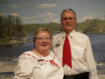
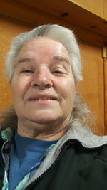
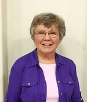
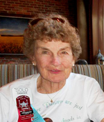

2019 Federation Officer Nominees
Here are the candidates running for office for the 2019-2020 year in the Oregon
Federation of Square and Round Dance Clubs. Your club secretary will receive
a ballot by early March, and the ballot is due back with the
Federation Secretary by April 21.
The current President (Lorri McIntosh) automatically becomes the Past President.
The current 1st Vice President (Karyn Buchheit) automatically becomes the President.
First Vice President
|

|
1st VP -- Gary Clark
Sunset Promenaders
Tualatin Valley Council
Residence: North Plains, OR
Occupation: Retired
Dance experience: 49 years
Club offices held: President, Vice President
Council offices held: President
Federation offices held: 2nd Vice President
Other leadership: 2007 Summer Festival Chairman, Seaside Sashay Chairman 5 years
|
Second Vice President
|
|
2nd VP -- Larry Reetz
Whirl-A-Ways
Emerald Empire Council
Residence: Eugene, OR
Occupation: Retired Air Force Public Affairs
Dance experience: 55 years
Club offices held: President, Vice President, Secretary, Treasurer, Delegate
Council offices held: President, Vice President, Secretary
Federation offices held: President, 1st Vice President, 2nd Vice Preaident, Past President
Other Leaderhip: Mid-Winter Festival Chairman 3 times
|
|
|
|
2nd VP -- Tim Keck
River City Dancers
Portland Area Council
Residence: Vancouver, WA
Occupation: Retired BLM Surveyor
Dance experience: 40 years
Club offices held: Chairman
Council offices held: President, Vice President, Secretary
Federation offices held: ORDTA Chairman, 3 years
Other Leaderhip: ICBDA Board Member
|
Secretary
|
|
Secretary -- Roberta Claudson
Star Promenaders
Rogue-Sis-Q Council
Residence: Medford, OR
Occupation: Property Management
Dance experience: 28 years
Club offices held: President, Vice President, Secretary, Treasurer
Council offices held: President, State Delegate
Federation offices held: Area Delegate
Other experience: Chairman Pear Blossom Festival
|
Treasurer
|

|
Treasurer -- Marilyn Schmit
Muddy Frogs, IWW
Mid-Willamette Council
Residence: Dallas, OR
Occupation: Retired
Dance experience: 35 years
Club offices held: Secretary, Delegate
Council offices held: President, Vice President, Secretary, Treasurer, Editor, Reporter
Federation offices held: President, 1st Vice President, 2nd Vice President, Past President, Membership,
Insurance
|
Membership
|

|
Membership -- Denny Fullerton
Klamath County Squares
Interstate Highlanders Council
Residence: Klamath Falls, OR
Occupation: Retired
Dance experience: 10 years
Club offices held: President
Other experience: Chairman Potato Festival, 3x
|
|
|

|
Membership -- Harriet Livingston
Salem Swinging Stars
Mid-Willamette Council
Residence: Salem, OR
Occupation: Retired
Dance experience: 40 years
Club offices held: President, Vice President, Secretary, Treasurer, Delegate
Council offices held: President, Secretary, Delegate
State offices held: Education Chairman
|